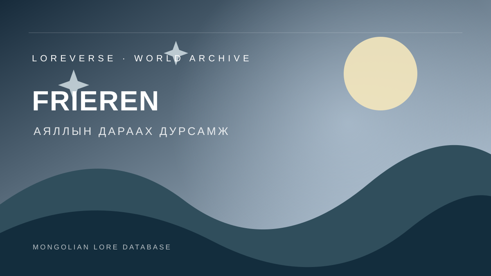

Ертөнц ба түүхэн нөхцөл
Баатруудын ялалтын дараах уран зөгнөлт ертөнц. Хүмүүс, элфүүд, одойчууд болон чөтгөрүүд өөр өөр цаг хугацааны ойлголт, соёлтой. Аяллын зам, хот суурин, ид шидийн холбоо нь ертөнцийн өнгө төрхийг бүрдүүлдэг.
Чөтгөрийн хааныг ялсан баатруудын аялал дууссаны дараа мянга гаруй наст элф шидтэн Фрирен хүний богино амьдрал, дурсамж, харилцааны үнэ цэнийг ойлгохоор шинэ аялалд гарна.

Баатруудын ялалтын дараах уран зөгнөлт ертөнц. Хүмүүс, элфүүд, одойчууд болон чөтгөрүүд өөр өөр цаг хугацааны ойлголт, соёлтой. Аяллын зам, хот суурин, ид шидийн холбоо нь ертөнцийн өнгө төрхийг бүрдүүлдэг.
Ид шид нь мэдлэг, туршлага, төсөөлөл, мана болон эсрэг аргачлалтай холбоотой. Фрирен энгийн мэт харагдах олон шившлэг цуглуулдаг ч тулаанд илүү нарийн мана нуух, илрүүлэх, хамгаалах арга хэрэглэнэ. Шидтэний зэрэглэлийн шалгалт нь ид шидийн нийгмийн институцийг харуулдаг.
Фрирен — урт наст элф шидтэн; Химмел — баатруудын бүлгийн зоригт удирдагч; Хайтер — санваартан; Айзен — одой дайчин; Ферн — Фрирений шавь; Старк — Айзены шавь, дайчин.
Хүний ид шидтэний холбоо болон нэгдүгээр зэрэглэлийн шидтэний шалгалтын бүтэц нь ид шидийн ертөнцийн чухал байгууллагууд. Чөтгөрүүдийг хүнтэй адил ёс суртахуунтай төрөл гэж үзэхгүй байх нь зохиолын гол сэдвийн нэг.
Баатруудын ялалт ба салалт → Химмелийн нас баралт → Фрирен Фернтэй аялалд гарах → Хойд нутгийн аялал → Ид шидтэний шалгалт → Алс хойд зүгт хүрэх зорилго.
Албан ёсны анимэний сайт: https://frieren-anime.jp/
Эх зохиолын цаашдын үйл явдлыг анимэд хараахан дүрслэгдээгүй хэсэгтэй хольж болохгүй.
Энэ хуудас нь LOREVERSE-ийн Монгол хэл дээрх фэн судалгааны материал. Албан ёсны бүтээл биш. Канон, дасан зохицуулалт, фэн таамгийг тусад нь тэмдэглэн шинэчилнэ.
Энэ хэсэг нь ертөнцийн дотоод логик, дүрийн зорилго, хүчний дүрэм, улс төрийн нөхцөл болон үйл явдлын шалтгаан-үр дагаврыг нэгтгэнэ. Спойлерын агуулгатай.
Демон хааныг ялсны дараах энх цагийн эхлэл нь зохиолын эхлэл. Баатар Химмелийн багийн арван жилийн аялал түүхэн дурсамж болон үлдсэн ч Фриренийн хувьд элфийн урт наснаас шалтгаалан хүний богино амьдралын үнэ цэнэ хожуу ойлгогдоно. Аяллын гол зорилго нь Ауреоле буюу нас барагсдын сүнстэй уулзах газар хүрэх.
Мана бол ид шидийн үндсэн нөөц. Илбэчин манагаа мэдрэх, нуух, удирдах чадвараар ялгарна. Орчин үеийн хүний ид шид нь Фламмегийн нөлөөгөөр өргөн тархсан. Золтраак нь анх хүнийг алах зориулалттай байсан ч эсрэг хамгаалалт хөгжсөнөөр стандарт довтолгооны шид болсон. Хамгаалалтын шид, нисэх, саармагжуулах, хараал тайлах зэрэг төрөл тус бүр өөрийн хязгаартай.
Фрирен — мянга гаруй настай элф илбэчин, дурсамж ба хүний сэтгэлийг ойлгохоор аялна; Ферн — Фрирений шавь, сахилга баттай илбэчин; Старк — Айзены шавь, айдсаа даван туулдаг дайчин; Химмел — баатар багийн удирдагч, хүний дурсамжид үлдсэн; Хайтер — санваартан; Айзен — одой дайчин; Фламме — Фрирений багш; Сери — домогт илбэчин, эхний зэрэглэлийн шалгалтын төв дүр.
Хойд нутгийн илбэчдийн холбоо нь зэрэглэл, шалгалт, мэргэжлийн зохицуулалтыг хариуцна. Чөтгөрүүд хүнтэй адил үг хэлдэг ч хүний сэтгэл, ёс суртахууныг хуваалцдаггүй; хэл яриаг хуурмаг хэрэгсэл болгон ашиглах нь тэдний аюулын нэг. Баатар багийн үлдээсэн дурсамж нь одоогийн аяллын ёс суртахууны чиглүүлэгч болдог.
1) Баатар баг Демон хааныг ялна. 2) 50 жилийн дараа Фрирен Химмелтэй дахин уулзаж, түүний үхлийн дараа харамслаа ойлгоно. 3) Фернийг шавь болгон авч, Хайтерын хүсэлтийг биелүүлнэ. 4) Старк багт нэгдэнэ. 5) Хойд зүг рүү Ауреоле хүрэх аялал. 6) Нэгдүгээр зэрэглэлийн илбэчний шалгалт. 7) Чөтгөрийн долоон мэргэн, хуучин дайны нууцуудтай тулгарна.
Ауреоле — нас барагсдын сүнстэй уулзах газар гэж үздэг хойд нутгийн газар; Мана — ид шидийн энерги; Золтраак — довтолгооны шид; Гримуар — шидийн судар; Нэгдүгээр зэрэглэлийн илбэчин — холбооны шалгалтын дээд мэргэжлийн зэрэг.
MADHOUSE-ийн анимэ нь Ямада Канэхито, Абэ Цукаса нарын манга дээр суурилсан. Анимэний дуу, хөдөлгөөн, тулааны найруулга нь эх зохиолын дүрслэлийг баяжуулдаг боловч мангад хожим гарсан үйл явдлыг анимэний адаптацлагдсан хэсэгтэй хольж болохгүй.